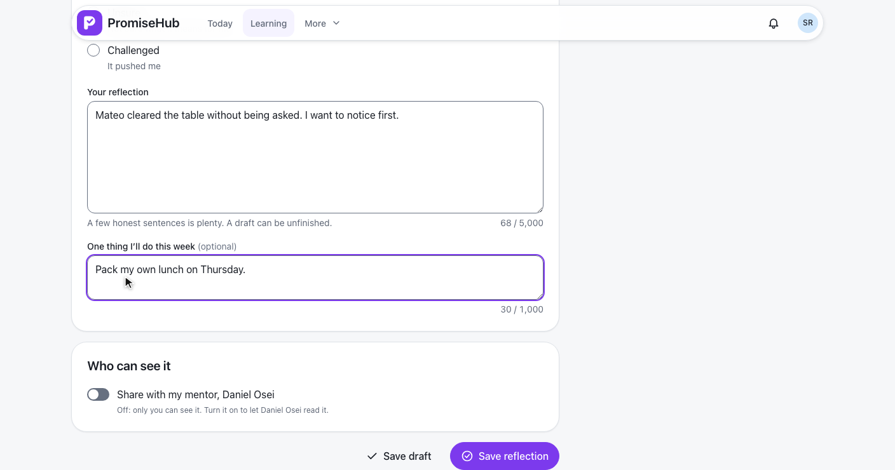
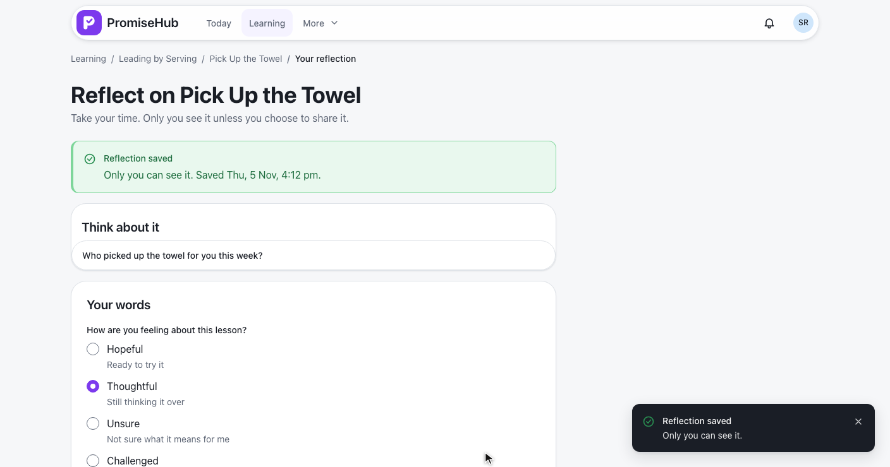
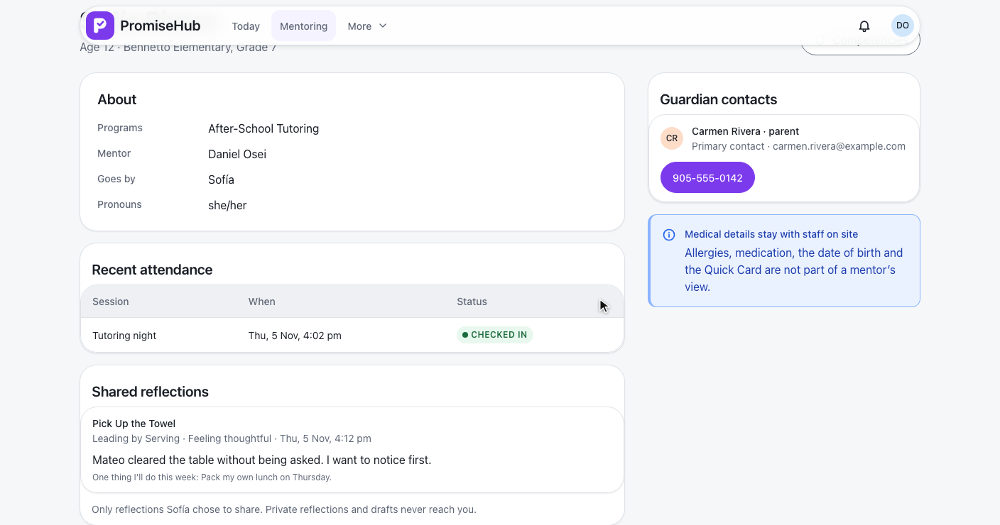
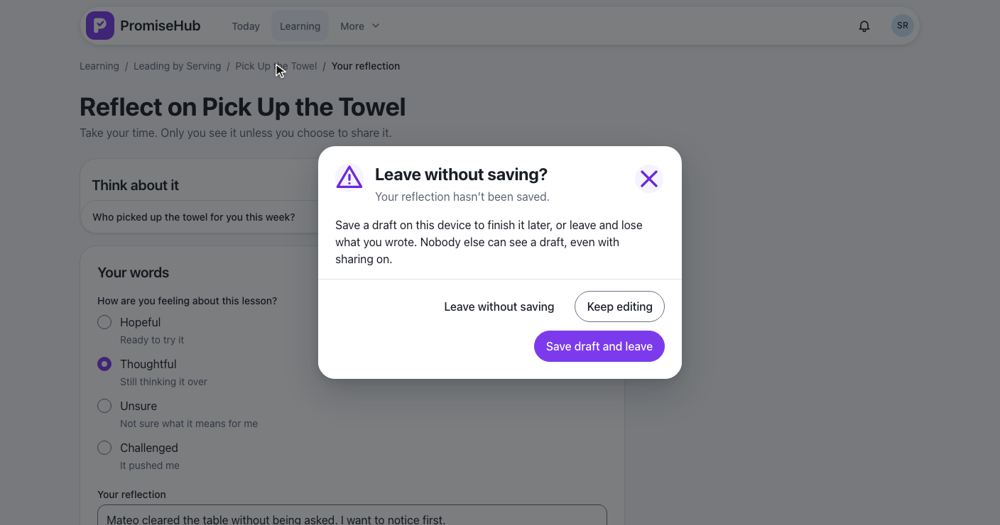
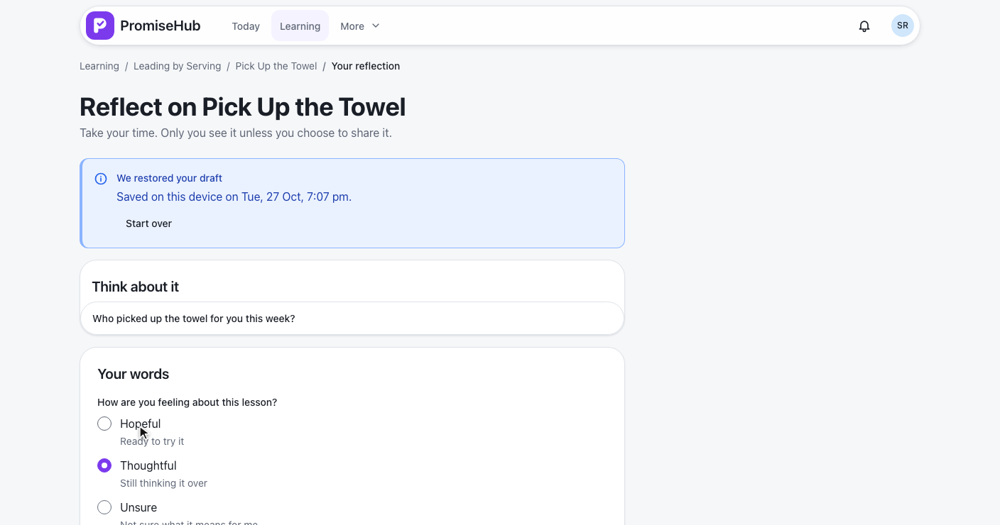
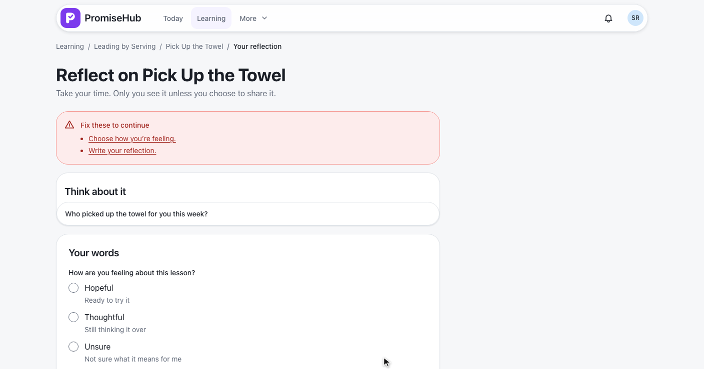
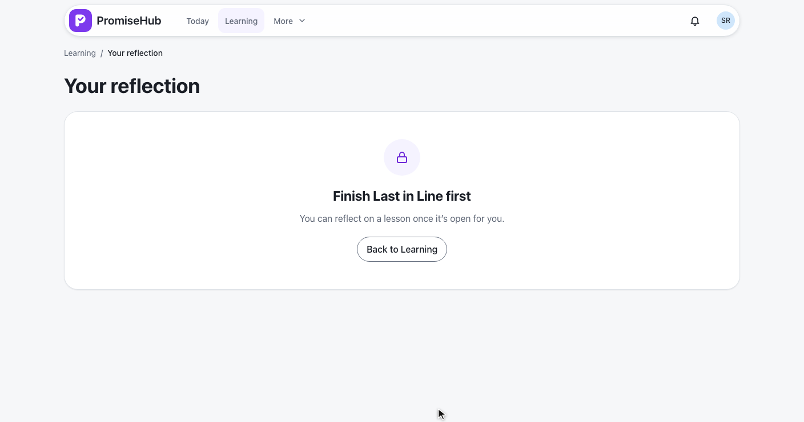

PromiseHub · Video 66
Write reflections
Private by default, shared with her mentor only when she chooses
Private by default, shared with her mentor only when she chooses
From the lesson: how she feels, her words and one thing she'll do.


| Rule | On the server |
|---|---|
| Kept | One per youth membership and lesson, replaced on each save |
| Required | A mood and her words (up to 5,000 characters) |
| Optional | One thing she'll do this week (up to 1,000) |
| Audited | Created or Updated with Shared before and after, never her words |
PUT /learning/lessons/{id}/reflection · ADR 0060
Only what she shared, newest first, on her record.
| Caller | Answer |
|---|---|
| Sofía | Her own, private or shared |
| Her mentor | Only the shared ones, audited |
| Another mentor | 403, audited |
| Admins, directors, staff, guardians | No endpoint answers |
| Another organization | 404 |

Save draft and leave, then the draft restored.


Her reflection, then Daniel's card.
Invalid, failed, not reached, not open yet, Learning off.


LearningReflectionsTests: editor, save and replace, checks, audit without words, gates, tenancy, Learning offMentorReflectionsTests: shared only, newest first, another mentor, other roles, modules offreflection.spec.ts, shared-reflections.spec.ts on phone and laptop, with axe
Next: mentors record check-ins